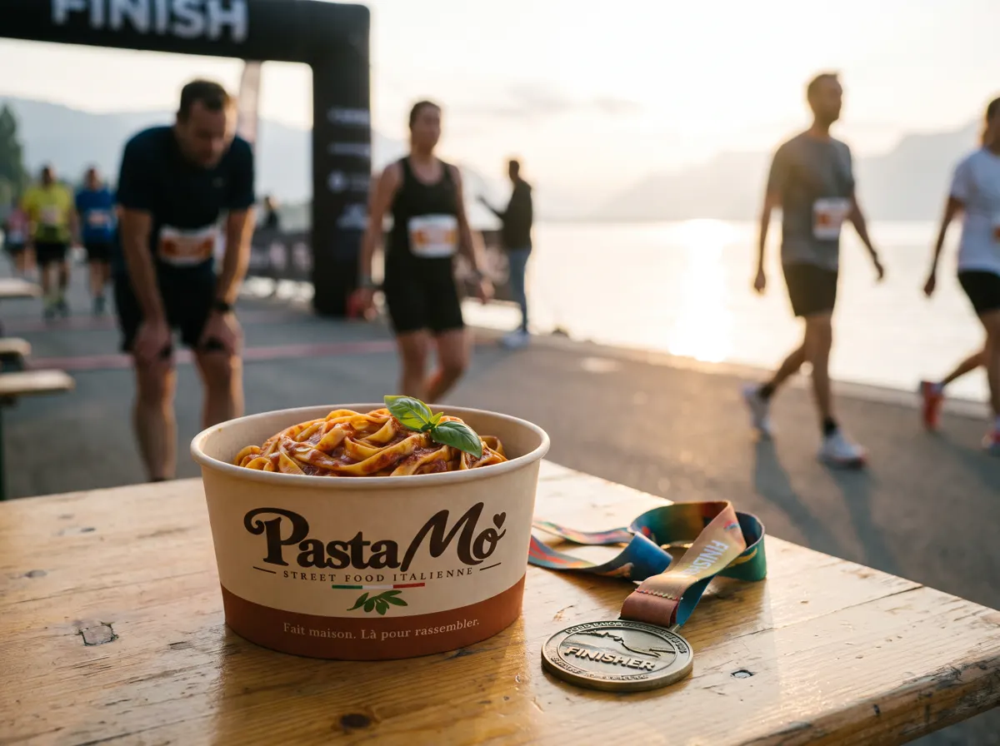

Courses à pied · Trails · Tournois
Eat pasta. Run fasta.
La pasta party de la veille ou le repas après la ligne d'arrivée : des pâtes fraîches d'un artisan genevois et trois sauces maison, servies chaudes sur votre course.
Après l'effort, le réconfort
Le plat de pâtes, le classique des coureurs.
Participants, bénévoles, public : tout le monde a faim à l'arrivée. On s'installe sur votre site de course avec un stand autonome et on sert des pasta box chaudes, au rythme des arrivées.
- Pasta party la veille ou le matin du départ
- Repas d'arrivée pour les coureurs et les bénévoles
- Stand ouvert au public et aux familles
- Quantités prévues à l'avance avec l'organisation
Pourquoi les organisateurs nous appellent
Prêt à l'heure des arrivées
Les box sont servies vite, au moment où les coureurs franchissent la ligne. Pas d'attente qui refroidit.
Une carte qui convient à tous
Trois sauces, dont deux végétariennes. La Pomodoro, sans piquant, plaît aussi aux enfants.
Un seul interlocuteur
De votre première demande au jour de la course, vous parlez à la même personne. On s'adapte à votre programme.
Comment ça se passe
- Vous nous écrivezDate, lieu, nombre d'inscrits et de bénévoles.
- On vous propose une formulePasta party, repas d'arrivée ou les deux, avec les quantités.
- On s'installeStand autonome. On fait le point avec vous sur l'emplacement, l'électricité et l'eau.
- On sert, on rangeVous vous occupez de votre course, on s'occupe des assiettes.
Ce qu'on sert
Trois sauces maison, une box.
Des pâtes fraîches d'un artisan genevois, et trois recettes de famille préparées par Morgane.


Questions fréquentes
Pasta party la veille ou repas après la course ?
Les deux sont possibles : une pasta party la veille ou le matin du départ, un repas à l'arrivée, ou les deux. On construit la formule avec vous.
Comment prévoyez-vous les quantités ?
Avec l'organisation, à partir du nombre d'inscrits, de bénévoles et du public attendu. Tout est convenu avant le jour de la course.
Pouvez-vous aussi servir le public ?
Oui. Le stand peut servir les coureurs, les bénévoles et le public, avec des formules différentes si besoin.
Avez-vous des options végétariennes ?
Oui : le Pesto Verde et la Pomodoro sont végétariens. Nos pâtes fraîches contiennent des œufs, nous ne proposons donc pas d'option vegan.
Où vous déplacez-vous ?
À Genève et dans tout le canton. Pour le canton de Vaud et le reste de la Suisse romande, écrivez-nous : nous étudions chaque course.
Quand pouvez-vous intervenir ?
Nos premiers événements sont prévus dès début 2027. Nous préparons déjà le calendrier : écrivez-nous dès que votre date est connue.
Votre course mérite sa pasta party.
Dites-nous la date, le lieu et le nombre de participants. On revient vers vous avec une proposition claire.
Ou par téléphone : 078 213 38 68